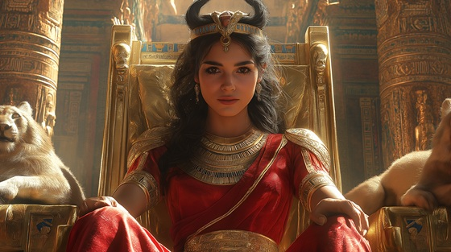

Feel the royal pulse of ancient divine femininity in “Mother of the Crown”, a majestic symphonic metal anthem for Mut, the powerful matron of Amun, queen of gods, and celestial mother of kingship itself.
Who is Mut?
Mut (meaning “mother”) is a primal creator goddess, wife of Amun, and part of the Theban Triad alongside Khonsu. She is a lioness, a queen, a vulture goddess, and a mother of rulers, embodying power and stillness with grace and iron will.
She is often shown wearing the double crown of Upper and Lower Egypt, holding the ankh and scepter, or with the vulture headdress of protection. She represents maternal sovereignty, divine queenship, and the sacred legacy of rulers.
Mut: Mother of the Crown
Upon the throne where silence dwells
I speak through kings, through sacred spells
My crown of vultures guards the skies
Where queens ascend and empires rise
My voice is calm, my will is steel
The gods obey what I reveal
No wrath I show, yet all shall bend
To where my shadow does extend
I birth no chaos, wield no flame
Yet all who rule invoke my name
I am Mut — the mother flame
The throne behind the royal name
With arms of stars and gaze of stone
I build the crown, I guard the throne
The scepter’s path, the blood divine
All sovereign hearts are born from mine
I wore the crown in every age
With lioness calm and priestess rage
The mother queen, the builder's guide
The stillness where the storms subside
They seek me not in war or feast
But when the golden line has ceased
And all that’s broken seeks its root
They find their queen in shadowed truth
I birth no chaos, wield no flame
Yet all who rule invoke my name
I am Mut — the mother flame
The throne behind the royal name
With arms of stars and gaze of stone
I build the crown, I guard the throne
The scepter’s path, the blood divine
All sovereign hearts are born from mine
The son I raise becomes the sun
The queen I mold — a war undone
No blood need fall to claim my grace
But honor, truth, and sacred place
I do not march, I do not cry
Yet kingdoms rise where I walk by
The river’s womb, the temple’s breath
I am the voice that outlasts death
I birth no chaos, wield no flame
Yet all who rule invoke my name
I am Mut — the mother flame
The throne behind the royal name
With arms of stars and gaze of stone
I build the crown, I guard the throne
The scepter’s path, the blood divine
All sovereign hearts are born from mine
So kneel not low, but stand in truth
For I have borne both wrath and youth
And all who wear the crown of kings
Shall rise from where the mother sings
I am Mut, eternal flame
The lioness who bears no shame
In throne, in tomb, in royal womb
I reign where silence finds its bloom